Get Gimbal up and running in your Android App.
The following steps will set up an application in Eclipse ready for enabling Gimbal features.
Make sure you:
In Eclipse choose File > New > Project and search for "Android Application Project" as seen below.
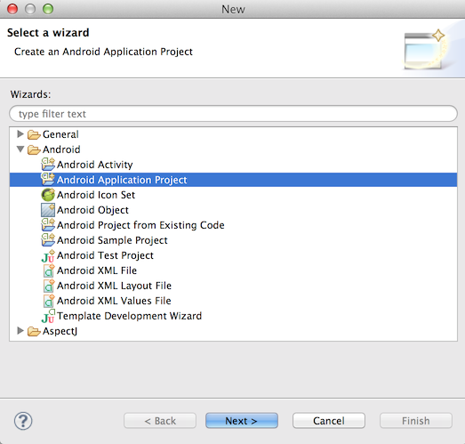
Fill out your "Application Name", "Project Name", and "Package Name" fields.
Important Make sure the "Minimum Required SDK", "Target SDK", and "Compile With" fields are set to at least API 8: Android 2.2. Then click through the rest of the "New Android Application" setup wizard.
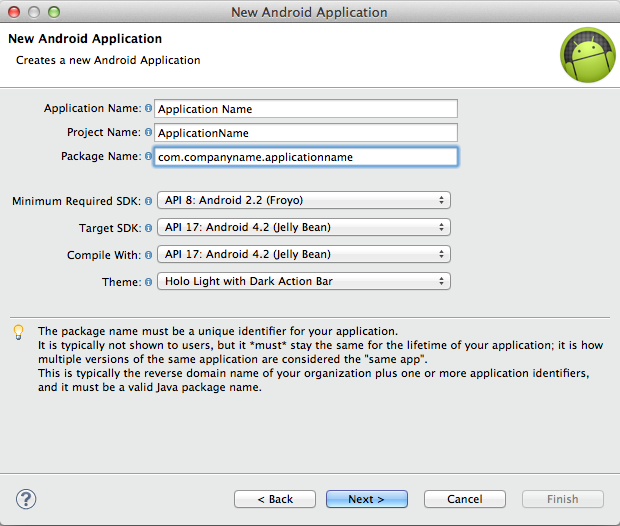
Note You will find these jars in the client-sample-mall-mart-embed/libs folder inside the Gimbal SDK zip file.
Add jars to your Android application by copy and pasting them into the libs folder of your android project.
Your project should now look similar to this:
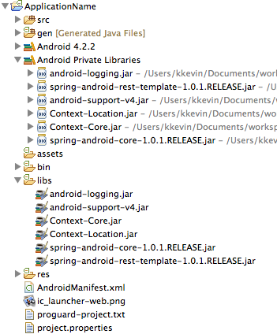
Follow the link below to create your application in Manager.
Note This link should take you to the "Production" environment. You can check by looking in the top right part of the page and verifying that it says "Production".
Fill in the fields to look something like this:
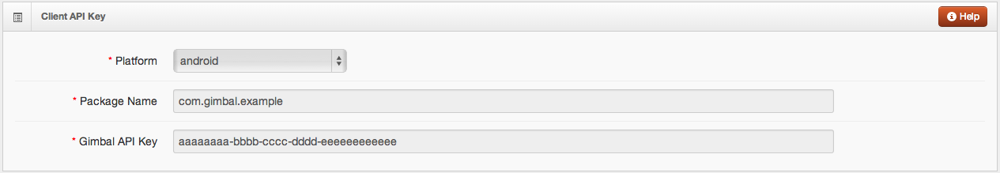
Then click Generate.
Your newly generated API key should appear under your package name.
In order for your application to use Gimbal API's, it has to authenticate itself by providing your API key, name, and desired capabilities. You will need to create a file called usercontext.properties at the location assets/properties. You may have to create the properties folder yourself.
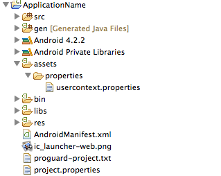
You will add three lines to your file so it looks like the following:
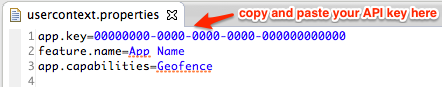
To allow Gimbal location to function, you need to add a few elements to your AndroidManifest.xml file.
First, you need to specify the permissions that Gimbal needs to function properly. They are shown below.
<uses-permission android:name="android.permission.INTERNET" />
<uses-permission android:name="android.permission.READ_PHONE_STATE" />
<uses-permission android:name="android.permission.ACCESS_FINE_LOCATION" />
<uses-permission android:name="android.permission.ACCESS_WIFI_STATE" />
<uses-permission android:name="android.permission.WAKE_LOCK" />
<uses-permission android:name="android.permission.BATTERY_STATS" />
<uses-permission android:name="android.permission.ACCESS_NETWORK_STATE" />
<uses-permission android:name="android.permission.WRITE_SETTINGS" />
<uses-permission android:name="android.permission.RECEIVE_BOOT_COMPLETED" />
Then, you need to add a service and a receiver to your application. Make sure you place them inside of the <application></application> XML element. Where it says "com.companyname.applicationname" in red, replace it with your application's package name. (the package name you entered when you generated your API key)
<service
android:name="com.qualcommlabs.usercontext.service.GimbalService"
android:exported="false" >
<intent-filter>
<action android:name="com.companyname.applicationname.service.USER_CONTEXT_SERVICE" />
</intent-filter>
</service>
<receiver
android:name="com.qualcommlabs.usercontext.service.UserContextServiceStartStopReceiver"
android:enabled="true" >
<intent-filter>
<action android:name="android.intent.action.BOOT_COMPLETED" />
</intent-filter>
<intent-filter>
<action android:name="android.intent.action.ACTION_SHUTDOWN" />
</intent-filter>
</receiver>
Now, we will add code to your MainActivity which is located in src/com.companyname.applicationname/MainActivity.java. This file should have been generated automatically when you created the project. It will contain a few overridden methods by default. You can leave them the way they are for now.
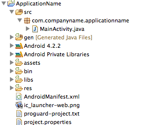
Important We are adding the code here for the purpose of demonstrating how to quickly get an application functioning. The location of this code in your application will depend on your design and intended usage of Gimbal.
First, import the necessary files:
import android.util.Log;
import com.qualcommlabs.usercontext.Callback;
import com.qualcommlabs.usercontext.ContextCoreConnector;
import com.qualcommlabs.usercontext.ContextCoreConnectorFactory;
Then, in your onCreate() method obtain an instance of the ContextCoreConnector and store it in a field. At the end, we call a private helper method called checkContextConnectorStatus(). Don't worry about any errors Eclipse gives you for writing this line because we will implement the method in a few steps:
private ContextCoreConnector contextCoreConnector;
@Override
protected void onCreate(Bundle savedInstanceState) {
super.onCreate(savedInstanceState);
setContentView(R.layout.activity_location);
contextCoreConnector = ContextCoreConnectorFactory.get(this);
checkContextConnectorStatus();
}
Finally, write the checkContextConnectorStatus() method we mentioned earlier. First, it checks to see if the permission has been enabled by the user. If it has then we use other Gimbal features (Geofencing, Communication, Interest Sensing, etc). If it hasn't then we call enable(). This prompts the user to accept terms of service and enable gimbal. If enable() succeeds, we are ready to use Gimbal features. Otherwise, we log the error message:
private void checkContextConnectorStatus() {
if (contextCoreConnector.isPermissionEnabled()) {
// Gimbal is already enabled
}
else {
contextCoreConnector.enable(this, new Callback<Void>() {
@Override
public void success(Void arg0) {
// Gimbal is ready
}
@Override
public void failure(int arg0, String arg1) {
Log.e("failed to enable", arg1);
}
});
}
}
Now, you are ready to add varioud Gimbal features. In order to launch the application make sure your phone is plugged in and in debug mode, then in Eclipse right click on your project and click Run as -> Android Application. Upon successful launch, you will be prompted to accept Gimbal terms of service.
Now, we will continue adding code to your MainActivity. This code will allow you to start listening for places.
First, import some more files:
import android.widget.Toast;
import com.qualcommlabs.usercontext.ContextPlaceConnector;
import com.qualcommlabs.usercontext.ContextPlaceConnectorFactory;
import com.qualcommlabs.usercontext.PlaceEventListener;
import com.qualcommlabs.usercontext.protocol.PlaceEvent;
Then, add some fields to hold an instance of the ContextPlaceConnector and a PlaceEventListener. Initialize your PlaceEventListener and tell it what to do when a place event occurs (e.g. when you break a geofence). The one we have made will log and toast the name and id of any geofences that are triggered:
private ContextPlaceConnector contextPlaceConnector;
private PlaceEventListener placeEventListener = new PlaceEventListener() {
@Override
public void placeEvent(PlaceEvent event) {
String placeNameAndId = "id: " + event.getPlace().getId() + " name: " + event.getPlace().getPlaceName();
Toast toast = Toast.makeText(getApplicationContext(), placeNameAndId, Toast.LENGTH_LONG);
toast.show();
Log.i("found place", placeNameAndId);
}
};
In your onCreate() method add a line to obtain the instance of the ContextPlaceConnector. Your onCreate() method should end up like this:
@Override
protected void onCreate(Bundle savedInstanceState) {
super.onCreate(savedInstanceState);
setContentView(R.layout.activity_location);
contextCoreConnector = ContextCoreConnectorFactory.get(this);
contextPlaceConnector = ContextPlaceConnectorFactory.get(this);
checkContextConnectorStatus();
}
private void checkContextConnectorStatus() {
if (contextCoreConnector.isPermissionEnabled()) {
startListeningForGeofences();
}
else {
contextCoreConnector.enable(this, new Callback<Void>() {
@Override
public void success(Void arg0) {
startListeningForGeofences();
}
@Override
public void failure(int arg0, String arg1) {
Log.e("failed to enable", arg1);
}
});
}
}
Finally, implement the ForGeofences() method that we call from checkContextConnectorStatus(). In this case, it is really simple and just adds the PlaceEventListener we made earlier to the ContextPlaceConnector:
private void startListeningForGeofences() {
contextPlaceConnector.addPlaceEventListener(placeEventListener);
}
Before you run your application, you want to create a geofence for your current location so you will see a place event trigger when your application starts.
Note Make sure the geofence you create is at your current location if you want it to trigger when your app launches.
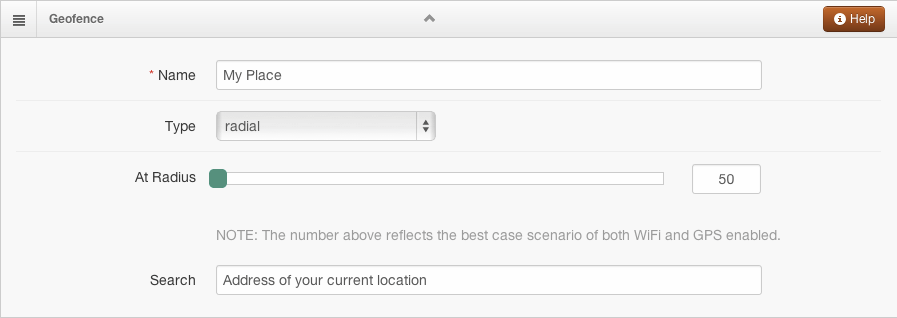
Now, everything should be ready for you to find some geofences. Make sure your phone is plugged in and in debug mode, then in Eclipse right click on your project and click Run as -> Android Application. Upon successful launch, you will be prompted to accept Gimbal terms of service. Once you do that you will see a toast and log entry with the name and id of the geofence you just made assuming it is around your location.
Note You will only get the geofence entered event when you install the application for the first time. All subsequent times you will have to leave the geofence and re-enter to get another event.
Gimbal uses Google Cloud Messaging (GCM) for enabling push on Android. In order to use GCM you'll have to setup your application on Google Devloper Console and obtain a GCM Sender ID and the Server key for the GCM Service. Please refer to GCM getting started and follow the steps to generate these keys. Here's an overview of the steps you'll have to follow:
Note Before moving forward make sure that you have obtained the Server key and Sender ID (project number) from Google Developer Console. Also ensure that Google Cloud Messaging for Android is enabled for your application.
Once you have obtained the Server API key (Noted as Google Cloud Messaging Key in Gimbal Manager) and Sender ID from Google Developer Console for you application follow these steps to enable Push on Android using Gimbal
On Gimbal Manager, select your existing Android application and scroll down to the Google Cloud Messaging Key section to setup Android push. Enter the Server API Key (created from Google Developer Console) and save. Now your application on Manager is set to send push messages to your Android application running on the device.
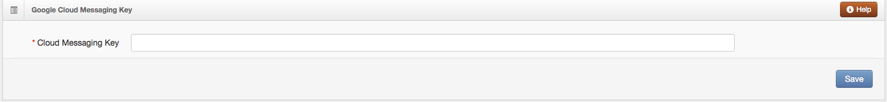
Google Play service is used on the client to enable receiving push messages. Add Google Play Services apklib project as a library to your existing application. Google has detailed instructions here to set it up. Here's an overview of the steps you'll have to follow:
Important When adding Google Play Services with Gimbal Proximity SDK, please use a version prior to 6 to avoid deprecation errors.
Edit your application's AndroidManifest.xml file, and add the following declaration within the <application> element. This embeds the version of Google Play services that the app was compiled with.
<meta-data
android:name="com.google.android.gms.version"
android:value="@integer/google_play_services_version" />
Also add these permissions to your application's AndroidManifest.xml file (in addition to all permissions needed by Gimbal) to allow Google to send push messages to your application.
<uses-permission android:name="com.google.android.c2dm.permission.RECEIVE" />
<permission android:name="com.companyname.applicationname.permission.C2D_MESSAGE" android:protectionLevel="signature" />
<uses-permission android:name="com.companyname.applicationname.permission.C2D_MESSAGE" />
Note Make sure to change "com.companyname.applicationname" to your application's package name in above permissions.
Once Gimbal is enabled in your application you can tell Gimbal your application is interested in receiving Push Messages. You can make a call to ContextPushNotificationsConnector.registerForRemoteNotification to register with Gimbal to receive Push. SENDER_ID is the project number that was generated when you created a project on Google Cloud Console.
contextCoreConnector.enable(this, new Callback() {
@Override
public void success(Void responseObject) {
ContextPushNotificationsConnector.registerForRemoteNotification(context, SENDER_ID);
}
@Override
public void failure(int statusCode, String errorMessage) {
//Failed
}
});
In order to receive Push Content, create an instance of ContextCoreConnector or use the instance that was created earlier and add an implementation of ContentListener to it. Whenever a push is sent to the client, Gimbal will call your application on ContentListener.contentEvent. Your application can now decide whether or not to raise a notification to the User.
ContextCoreConnector contextCoreConnector = ContextCoreConnectorFactory.get(context);
contextCoreConnector.addContentListener(new ContentListener() {
@Override
public void contentEvent(ContentEvent contentEvent) {
// Push Content Received
}
});
Note If you want your Listener to survive service/device restart, then make sure you have an Android Service in your application that is started as STICKY and the above code is executed in onCreate of the service.
Note In order to send Push only to users in certain geofences, you'll have to add place.state.available.on.server=true to usercontext.properties in your application.
You are ready to schedule a Time Trigerred Push to the client. Make sure you run your application on a device and enable Gimbal. Go to the Communication tab on Gimbal Manager to send a Time Trigerred Push. Click on Add Communication on the right and select Communication.
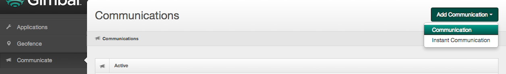
Go to the Triggers tab and select triggers type to 'Time'. You will be able schedule time triggered push here.
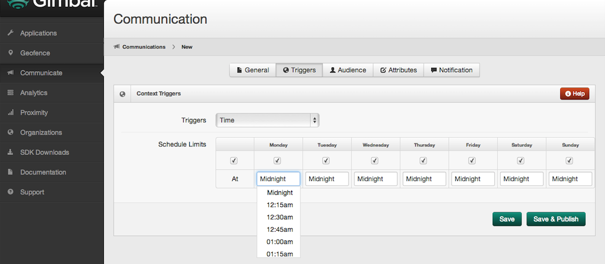
You are ready to send an Instant Push to the client. Make sure you run your application on a device and enable Gimbal. Go to the Communications tab on Gimbal Manager to send an Instant Push. Click on Add Communication on the right and select Instant Communication.
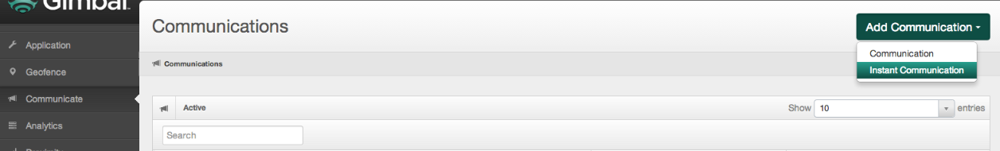
On the next page fill in the details of your push message and click on Save & Publish to send your Instant Communication to your device.
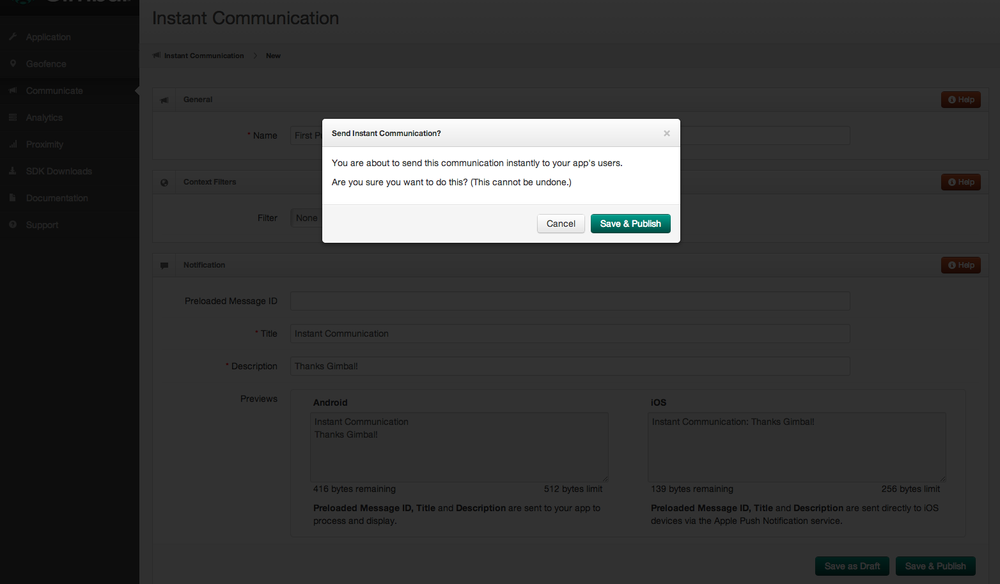
For additional details on how to leverage the SDK functionality, refer to the sample applications and documentation included in the zip file provided.